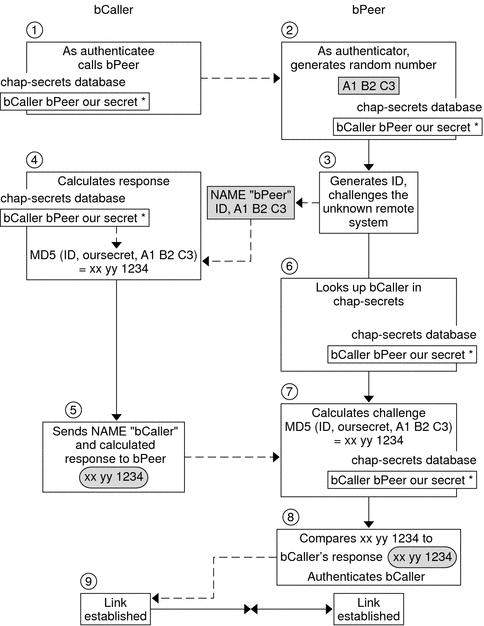

| Previous | Next |
Part I Network Services Topics
Part II Accessing Network File Systems Topics
4. Managing Network File Systems (Overview)
5. Network File System Administration (Tasks)
6. Accessing Network File Systems (Reference)
8. Planning and Enabling SLP (Tasks)
10. Incorporating Legacy Services
Part V Serial Networking Topics
15. Solaris PPP 4.0 (Overview)
16. Planning for the PPP Link (Tasks)
17. Setting Up a Dial-up PPP Link (Tasks)
18. Setting Up a Leased-Line PPP Link (Tasks)
19. Setting Up PPP Authentication (Tasks)
20. Setting Up a PPPoE Tunnel (Tasks)
21. Fixing Common PPP Problems (Tasks)
22. Solaris PPP 4.0 (Reference)
Using PPP Options in Files and on the Command Line
Configuring User-Specific Options
Specifying Information for Communicating With the Dial-in Server
Configuring Modem Speed for a Dial-up Link
Defining the Conversation on the Dial-up Link
How to Invoke a Chat Script (Task)
How to Create an Executable Chat Program
Creating an IP Addressing Scheme for Callers
Creating PPPoE Tunnels for DSL Support
23. Migrating From Asynchronous Solaris PPP to Solaris PPP 4.0 (Tasks)
25. Administering UUCP (Tasks)
Part VI Working With Remote Systems Topics
27. Working With Remote Systems (Overview)
28. Administering the FTP Server (Tasks)
29. Accessing Remote Systems (Tasks)
Part VII Monitoring Network Services Topics
Authenticating Callers on a Link
This section explains how the PPP authentication protocols work and explains the databases that are associated with the authentication protocols.
Password Authentication Protocol (PAP)
PAP authentication is somewhat similar in operation to the UNIX login program, though PAP does not grant shell access to the user. PAP uses the PPP configuration files and PAP database in the form of the /etc/ppp/pap-secrets file for setting up authentication. PAP also uses /etc/ppp/pap-secrets for defining PAP security credentials. These credentials include a peer name, a “user name” in PAP parlance, and a password. PAP credentials also contain related information for each caller who is permitted to link to the local machine. The PAP user names and passwords can be identical to or different from the UNIX user names and passwords in the password database.
/etc/ppp/pap-secrets File
The PAP database is implemented in the /etc/ppp/pap-secrets file. Machines on both sides of the PPP link must have properly configured PAP credentials in their /etc/ppp/pap-secrets files for successful authentication. The caller (authenticatee) supplies credentials in the user and password columns of the /etc/ppp/pap-secrets file or in the obsolete +ua file. The server (authenticator) validates these credentials against information in /etc/ppp/pap-secrets, through the UNIX passwd database, or in the PAM facility.
The /etc/ppp/pap-secrets file has the following syntax.
myclient ISP-server mypassword *
The parameters have the following meaning.
- myclient
PAP user name of the caller. Often, this name is identical to the caller's UNIX user name, particularly if the dial-in server uses the login option of PAP.
- ISP-server
Name of the remote machine, often a dial-in server.
- mypassword
Caller's PAP password.
- *
IP address that is associated with the caller. Use an asterisk (*) to indicate any IP address.
Creating PAP Passwords
PAP passwords are sent over the link in the clear, that is, in readable ASCII format. For the caller (authenticatee), the PAP password must be stored in the clear in any of the following locations:
In /etc/ppp/pap-secrets
In another external file
In a named pipe through the pap-secrets @ feature
As an option to pppd, either on the command line or in a PPP configuration file
Through the +ua file
On the server (authenticator), the PAP password can be hidden by doing one of the following:
Specifying papcrypt and using passwords that are hashed by crypt(3C) in the pap-secrets file.
Specifying the login option to pppd and omitting the password from the pap-secrets file by placing double quotes ("") in the password column. In this instance, authentication is performed through the UNIX passwd database or the pam(3pam) mechanism.
What Happens During PAP Authentication
PAP authentication occurs in the following sequence.
Figure 22-1 PAP Authentication Process

The caller (authenticatee) calls the remote peer (authenticator) and provides its PAP user name and password as part of link negotiation.
The peer verifies the identity of the caller in its /etc/ppp/pap-secrets file. If the peer uses the login option of PAP, the peer verifies the caller's user name and password in its password database.
If authentication is successful, the peer continues link negotiation with the caller. If authentication fails, the link is dropped.
(Optional) If the caller authenticates responses from remote peers, the remote peer must send its own PAP credentials to the caller. Thus, the remote peer becomes the authenticatee and the caller the authenticator.
(Optional) The original caller reads its own /etc/ppp/pap-secrets to verify the identity of the remote peer.
Note - If the original caller does require authentication credentials from the remote peer, Step 1 and Step 4 happen in parallel.
If the peer is authenticated, negotiation continues. Otherwise, the link is dropped.
Negotiation between caller and peer continues until the link is successfully established.
Using the login Option With /etc/ppp/pap-secrets
You can add the login option for authenticating PAP credentials to any PPP configuration file. When login is specified, for example, in /etc/ppp/options, pppd verifies that the caller's PAP credentials exist in the Solaris password database. The following shows the format of a /etc/ppp/pap-secrets file with the login option.
joe * "" * sally * "" * sue * "" *
The parameters have the following meanings.
- Caller
joe, sally, and sue are the names of the authorized callers.
- Server
Asterisk (*), which indicates that any server name is valid. The name option is not required in the PPP configuration files.
- Password
Double quotes, which indicate that any password is valid.
If a password is in this column, then the password from the peer must match both the PAP password and the UNIX passwd database.
- IP Addresses
Asterisk (*), which indicates that any IP address is allowed.
Challenge-Handshake Authentication Protocol (CHAP)
CHAP authentication uses the notion of the challenge and response, which means that the peer (authenticator) challenges the caller (authenticatee) to prove its identity. The challenge includes a random number and a unique ID that is generated by the authenticator. The caller must use the ID, random number, and its CHAP security credentials to generate the proper response (handshake) to send to the peer.
CHAP security credentials include a CHAP user name and a CHAP “secret.” The CHAP secret is an arbitrary string that is known to both the caller and the peer before they negotiate a PPP link. You configure CHAP security credentials in the CHAP database, /etc/ppp/chap-secrets.
/etc/ppp/chap-secrets File
The CHAP database is implemented in the /etc/ppp/chap-secrets file. Machines on both sides of the PPP link must have each others' CHAP credentials in their /etc/ppp/chap-secrets files for successful authentication.
Note - Unlike PAP, the shared secret must be in the clear on both peers. You cannot use crypt, PAM, or the PPP login option with CHAP.
The /etc/ppp/chap-secrets file has the following syntax.
myclient myserver secret5748 *
The parameters have the following meanings:
- myclient
CHAP user name of the caller. This name can be the same as or different from the caller's UNIX user name.
- myserver
Name of the remote machine, often a dial-in server.
- secret5748
Caller's CHAP secret.
Note - Unlike PAP passwords, CHAP secrets are never sent over the link. Rather, CHAP secrets are used when the local machines compute the response.
- *
IP address that is associated with the caller. Use an asterisk (*) to indicate any IP address.
What Happens During CHAP Authentication
CHAP authentication occurs in the following sequence.
Figure 22-2 CHAP Authentication Sequence
Two peers that are about to initiate communications agree on a secret to be used for authentication during negotiation of a PPP link.
The administrators of both machines add the secret, CHAP user names, and other CHAP credentials to the /etc/ppp/chap-secrets database of their respective machines.
The caller (authenticatee) calls the remote peer (authenticator).
The authenticator generates a random number and an ID, and sends this data to the authenticatee as a challenge.
The authenticatee looks up the peer's name and secret in its /etc/ppp/chap-secrets database.
The authenticatee calculates a response by applying the MD5 computational algorithm to the secret and the peer's random number challenge. Then the authenticatee sends the results as its response to the authenticator.
The authenticator looks up the authenticatee's name and secret in its /etc/ppp/chap-secrets database.
The authenticator calculates its own figure by applying MD5 to the number that was generated as the challenge and the secret for the authenticatee in /etc/ppp/chap-secrets.
The authenticator compares its results with the response from the caller. If the two numbers are the same, the peer has successfully authenticated the caller, and link negotiation continues. Otherwise the link is dropped.
| Previous | Next |